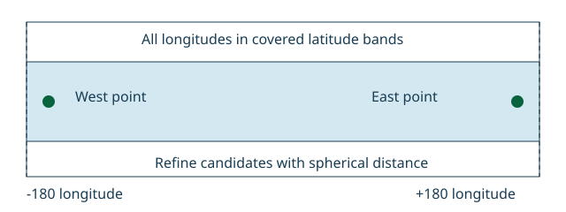

Lab L19 · Java + Go
Implementing nearby-object search
Build an in-memory index of moving objects (id → latitude/longitude) that answers two questions: which objects are within R metres of a point, sorted by distance, and which k objects are nearest. Distances use the haversine formula on a sphere. To avoid checking every object, the index groups points into 1-degree latitude bands, and a radius query only examines bands that could possibly contain a match.
The task
A rider opens the app; the dispatcher needs available drivers within 2 km. Drivers report their position every few seconds, so put with an existing id moves that driver. The band filter is a cheap first pass; the exact haversine check decides. The filter must be conservative: it may let through points that turn out to be too far, but it must never drop one that is within the radius — the tests compare against a brute-force scan.
lat ± Δ are never examined. Grey points inside a candidate band were measured and rejected.What you implement
public final class NearbyIndex {
public static final double EARTH_RADIUS_METERS = 6371008.8;
public record Point(double latitude, double longitude) {} // degrees
public record Hit(String id, double distanceMeters) {}
public void put(String id, Point p); // insert or move
public boolean delete(String id);
public static double distance(Point a, Point b); // haversine, metres
public List<Hit> radius(Point center, double meters); // distance <= meters
public List<Hit> nearest(Point center, int k);
}
// haversine: d = 2R · asin( sqrt( sin²(Δφ/2) + cos φ1 · cos φ2 · sin²(Δλ/2) ) ) (φ = lat, λ = lon, radians)Rules
- Valid coordinates: finite, latitude in [−90, 90], longitude in [−180, 180] → otherwise
IllegalArgumentException. Negative or non-finite radius, ork < 0→IllegalArgumentException. puton an existing id moves it: it appears once, in its new band only.radiusincludes points withdistance <= meters, sorted by distance, then id.- Band of a point =
floor(latitude). A radius ofmmetres spansm / Rradians of latitude; examine only bands overlapping[lat − Δ, lat + Δ]. Longitude is not filtered, which keeps the ±180° seam correct. nearest(k): thekclosest points (fewer if fewer exist), same ordering.- Thread-safe.
Worked example
put(d1, (0, 0)),put(d2, (0, 0.01))≈ 1,112 m away,put(d3, (1, 0))≈ 111 km away.radius((0,0), 2000)→[d1 · 0 m, d2 · ~1112 m].nearest((0,0), 1)→[d1].put(d2, (5, 5))(moved) →radius((0,0), 2000)→[d1].
Files and commands
Read the tests first, then replace each TODO in the starter until they pass. Java starter: NearbyIndex.java · tests: NearbyIndexTest.java. Go starter: index.go · tests: index_test.go, model_test.go.
cd java
./gradlew test --tests 'labs.nearby.*'
cd go
go test -race -count=1 ./nearbyReveal the reference solutions
Java: NearbyIndex.java
Go: index.go
When to use
Use this lab as a complete-search reference for a modest in-memory collection of moving locations. Each string identity has one position; inserting the same identity moves it atomically. Coordinates are latitude followed by longitude, both in degrees, with latitude between minus ninety and ninety and longitude between minus one hundred eighty and one hundred eighty. Reject nonfinite coordinates.
The distance model is a sphere with radius 6,371,008.8 metres. This is an explicit approximation, not an ellipsoidal geodesic or a projected planar distance. Do not use its output for precision surveying or claim that a spherical radius reproduces a database's ellipsoidal distance semantics. Results are sorted by distance, then identity for exactly equal computed distances.
Steps
- Prove complete candidates. Group points by one-degree latitude band. Great-circle angular distance bounds absolute latitude difference, so the radius yields a conservative latitude interval. Expand that interval outward for numerical roundoff, visit every occupied intersecting band, and refine with spherical distance. No longitude filter means antimeridian and polar queries cannot lose candidates through longitude wrapping. Tests compare random moves/deletes/queries against an independent exhaustive map.
- Compute geographic distance. Use the haversine expression, with angles converted to radians. Clamp the intermediate value into zero through one before the inverse trigonometric step to avoid NaN near antipodal points from floating-point roundoff. Longitude differences naturally cross the antimeridian through the periodic trigonometric formula.
- Define query boundaries. Radius queries include points whose computed distance is less than or equal to a nonnegative finite radius. Nearest-K accepts zero, rejects negative K, and returns all objects if K exceeds the collection size. Its exhaustive scan avoids an unproved nearest-neighbor termination rule.
- Choose consistency. Hold a read lock or monitor for the entire query and an exclusive lock for updates. Each query observes one consistent collection state. Coordinates are immutable values; callers cannot modify the stored location behind the index. Long scans hold the lock and delay writers.
- Test geographic boundaries. Put points on both sides of the antimeridian and query from longitude one hundred eighty. Move a far object to the centre, verify nearest-K, delete it, and test a repeated deletion. Verify equal-position ties, zero radius, invalid latitude, and an antipodal distance.
- State costs and extensions. Updates remove old band membership and add new membership under the query lock. Queries examine occupied bands and c candidate points, then sort m matches in O(m log m). Worst case remains a full scan; nearest-K deliberately considers every point. The paired
spatialpackages also demonstrate depth-limited planar quadtrees, andcellsdemonstrates pinned H3/S2 round trips. Their coordinate and coverage contracts are separate from spherical radius search.
Checklist
Recall and variation

Rebuild band-cover enumeration before reading Go or Java. Variation: query points just across longitude 180 at high latitude. Acceptance: indexed radius answers match a complete scan under the same sphere, and moving a point never leaves stale membership.
- Coordinate order, units, and spherical model are explicit
- Candidate generation cannot miss valid results under that model
- Move and delete update the same protected state used by queries
- Radius boundary and nearest-K tie behavior are defined
- Exact computed equality is not confused with tolerance-based geographic equivalence
Signals
Working: antimeridian queries find points on both sides and indexed extensions can be compared against the exhaustive reference.
Going wrong: latitude/longitude are swapped, a planar degree difference is called metres, or a faster cell filter excludes objects without a completeness argument. Mathematically coincident polar or wrapped-longitude representations may yield tiny floating-point discrepancies; use an explicit tolerance policy if that matters to the product.
Related
- Implementing a Route Planner, because route cost and straight-line geographic distance are different quantities.